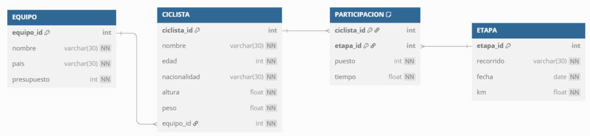

Supuestos completos
CyL24 - Ciclismo
En una famosa comarca de Castilla y León se celebra todos los años en torno al verano una vuelta ciclista no profesional de cinco etapas. Participan media docena de equipos con un máximo de 10 ciclistas en cada uno.
Entre los objetivos de todos los ciclistas siempre está el poder llegar hasta la última etapa, aunque las caídas y otro tipo de incidentes provocan que algunos ciclistas tengan que abandonar antes de llegar a la meta.
En una base de datos, se dispone de las siguientes tablas:
EQUIPO
| Columna | Tipo | Restricciones |
|---|---|---|
equipo_id |
NUMBER | PKL |
nombre |
VARCHAR2(30) | NOT NULL |
pais |
VARCHAR2(30) | NOT NULL |
presupuesto |
NUMBER | NOT NULL |
- CICLISTA |
| Columna | Tipo | Restricciones |
|---|---|---|
ciclista_id |
NUMBER | PK |
nombre |
VARCHAR2(30) | NOT NULL |
edad |
NUMBER | NOT NULL |
nacionalidad |
VARCHAR2(30) | NOT NULL |
altura |
NUMBER | NOT NULL |
peso |
NUMBER | NOT NULL |
equipo_id |
NUMBER | FK, NOT NULL |
- ETAPA |
| Columna | Tipo | Restricciones |
|---|---|---|
| etapa_id | NUMBER | PK |
| recorrido | VARCHAR2(30) | NOT NULL |
| fecha | DATE | NOT NULL |
| km | NUMBER | NOT NULL |
- PARTICIPACION |
| Columna | Tipo | Restricciones |
|---|---|---|
| ciclista_id | NUMBER | PK, FK |
| etapa_id | NUMBER | PK, FK |
| puesto | NUMBER | NOT NULL |
| tiempo | NUMBER | NOT NULL |
Enunciado
- Mostrar mediante una sola consulta SQL el nombre de los ciclistas que, al menos en dos etapas hayan conseguido un puesto 1, 2 o 3. En la consulta debe aparecer ordenada por puesto la siguiente información: nombre, puesto y número de veces que han conseguido dicho puesto.
-
Mostrar mediante una sola consulta SQL, el nombre y la edad de los ciclistas, junto a un DATO que indicará:
-
>PESOcuando el peso del ciclista supere la media del peso de los ciclistas de su equipo. <ALTURAcuando la altura del ciclista sea inferior a media de la altura de los ciclistas de su misma edad.- Teniendo en cuenta que cuando un ciclista no finaliza una etapa se le pone un 0 en el campo PUESTO de la tabla
PARTICIPACION, crear una función que reciba como parámetro un identificador de ciclista y devuelva la suma de kms de las etapas que ha finalizado, siempre que no sea la última en la que ha participado. (Es obligatorio crear también el bloque PL/SQL para probar la función). - Mediante una única sentencia, crea la tabla
CLASIFICACIONque contenga los camposCICLISTA_IDyPUNTOSe inserta tantos registros como ciclistas participan en la vuelta.
A continuación, convierte el campo CICLISTA_ID en clave primaria
5. Crear un procedimiento actualizado para actualizar el campo PUNTOS de la tabla anterior, con los puntos que les corresponden a los ciclistas según los puestos obtenidos en las etapas en las que han participado (tabla PARTICIPACION).
En función de la posición lograda en cada etapa, obtendrán los siguientes puntos:
- 1ª posición: 30 puntos.
- 2ª posición: 20 puntos.
- 3ª posición: 10 puntos.
-
Crear una tabla llamada
AUDITORIAcon una única columna con nombreINFOtipoVARCHAR(100). A continuación, se pide crear un disparador llamadoD_CLASIFICACIONpara auditar la inserción, modificación y borrado en la tablaCLASIFICACION, insertando un mensaje en la tablaAUDITORIAen función de la operación realizada. -
Si se inserta, el mensaje incluirá:
INSERCIÓN, fecha, identificador del ciclista y puntos. - Si se modifica, el mensaje incluirá
MODIFICACIÓN, fecha, nombre e identificación del ciclista, puntos anteriores y puntos finales. - Si se borra, el mensaje incluirá:
BORRADO, fecha, identificador del ciclista y puntos.
Solución
El primer paso es realizar un diagrama que nos permite visualizar las relaciones entre las diferentes tablas. Para ello emplearemos la sintaxis de DBML:
cyl24.dbml
Table EQUIPO {
equipo_id int [pk]
nombre varchar(30) [not null]
pais varchar(30) [not null]
presupuesto int [not null]
}
Table CICLISTA {
ciclista_id int [pk]
nombre varchar(30) [not null]
edad int [not null]
nacionalidad varchar(30) [not null]
altura float [not null]
peso float [not null]
equipo_id int [not null, ref: > EQUIPO.equipo_id]
}
Table ETAPA {
etapa_id int [pk]
recorrido varchar(30) [not null]
fecha date [not null]
km float [not null]
}
Table PARTICIPACION {
ciclista_id int [pk, ref: > CICLISTA.ciclista_id]
etapa_id int [pk, ref: > ETAPA.etapa_id]
puesto int [not null]
tiempo float [not null]
}
Obteniendo el siguiente diagrama mediante https://dbdiagram.io/:

Diagrama CyL24
A continuación, procedemos a solucionar las diferentes consultas.
- Para mostrar el nombre de los ciclistas que hayan quedado al menos dos veces en los puestos 1, 2 o 3, junto con el puesto y el número de veces que han conseguido ese puesto, y que la salida estará ordenada por puesto, necesitamos realizar un join entre ciclista y participación y para que el puesto sea uno de los indicados. Luego, tras agrupar, filtrar para que haya dos instancias de dichos ciclistas:
SELECT
C.nombre,
P.puesto,
COUNT(*) AS veces
FROM
PARTICIPACION P
JOIN
CICLISTA C ON C.ciclista_id = P.ciclista_id
WHERE
P.puesto IN (1, 2, 3)
GROUP BY
C.nombre, P.puesto
HAVING
COUNT(*) >= 2
ORDER BY
P.puesto;
De esta manera obtendríamos un resultado similar a :
| nombre | puesto | veces |
|---|---|---|
| Luis Gómez | 1 | 3 |
| Pedro Ruiz | 2 | 2 |
| Ana Torres | 3 | 4 |
Pero como nos pide que hayan quedado al menos dos veces en los puestos 1, 2 o 3, necesitamos quitar el puesto de la agregación:
SELECT
C.nombre,
COUNT(*) AS veces_en_podio
FROM
PARTICIPACION P
JOIN
CICLISTA C ON C.ciclista_id = P.ciclista_id
WHERE
P.puesto IN (1, 2, 3)
GROUP BY
C.nombre
HAVING
COUNT(*) >= 2
ORDER BY
veces_en_podio DESC;
Y ahora sí que obtenemos el resultado esperado:
| nombre | veces_en_podio |
|---|---|
| Ana Torres | 5 |
| Luis Gómez | 3 |
| Pedro Ruiz | 2 |
Finalmente, si queremos obtener el desglose de podios por tipo de puesto, podemos usar la variante con SUM(CASE...):
SELECT
C.nombre,
SUM(CASE WHEN P.puesto = 1 THEN 1 ELSE 0 END) AS primeros,
SUM(CASE WHEN P.puesto = 2 THEN 1 ELSE 0 END) AS segundos,
SUM(CASE WHEN P.puesto = 3 THEN 1 ELSE 0 END) AS terceros,
COUNT(*) AS total_podios
FROM
PARTICIPACION P
JOIN
CICLISTA C ON C.ciclista_id = P.ciclista_id
WHERE
P.puesto IN (1, 2, 3)
GROUP BY
C.nombre
HAVING
COUNT(*) >= 2
ORDER BY
total_podios DESC;
Obteniendo:
| nombre | primeros | segundos | terceros | total_podios |
|---|---|---|---|---|
| Ana Torres | 2 | 1 | 2 | 5 |
| Luis Gómez | 1 | 1 | 1 | 3 |
| Pedro Ruiz | 0 | 2 | 0 | 2 |
| 2. En la segunda consulta, que solicita recuperar para cada ciclista su nombre, edad y un campo adicional llamado DATO, que indique: |
' >PESO'si su peso es mayor que la media de su equipo.' <ALTURA'si su altura es menor que la media de los ciclistas de su misma edad.- Si no se cumple ninguna de las dos condiciones, ese campo debe quedar vacío o nulo.
Como solo se puede mostrar una condición, y hay que priorizar >PESO sobre <ALTURA, usaremos CASE en una única consulta, de manera que se evalúa primero el >PESO, y solo si no se cumple se evalúa <ALTURA. Además, necesitaremos utilizar subconsultas correlacionadas para calcular los valores medios:
SELECT
c.nombre,
c.edad,
CASE
WHEN c.peso > (
SELECT AVG(c2.peso) -- calcula el peso medio de los compañeros de equipo.
FROM CICLISTA c2
WHERE c2.equipo_id = c.equipo_id
) THEN '>PESO'
WHEN c.altura < (
SELECT AVG(c3.altura) -- calcula la altura media de los ciclistas de la misma edad.
FROM CICLISTA c3
WHERE c3.edad = c.edad
) THEN '<ALTURA'
ELSE NULL
END AS dato
FROM
ciclista c;
- Teniendo en cuenta que cuando un ciclista no finaliza una etapa se le pone un 0 en el campo
PUESTOde la tablaPARTICIPACION, crear una función que reciba como parámetro un identificador de ciclista y devuelva la suma de kms de las etapas que ha finalizado, siempre que no sea la última en la que ha participado.
``` DELIMITER //
CREATE FUNCTION kms_finalizados_sin_ultima(p_ciclista_id INT) RETURNS INT BEGIN DECLARE v_kms_total INT DEFAULT 0; DECLARE v_ultima_etapa_id INT;
-- Obtener la última etapa (con mayor ID) en la que participó el ciclista
SELECT MAX(etapa_id)
INTO v_ultima_etapa_id
FROM participacion
WHERE ciclista_id = p_ciclista_id;
-- Sumar los kms de las etapas finalizadas (puesto ≠ 0) y que no sean la última
SELECT IFNULL(SUM(e.km), 0)
INTO v_kms_total
FROM participacion p
JOIN etapa e ON p.etapa_id = e.etapa_id
WHERE p.ciclista_id = p_ciclista_id
AND p.puesto != 0
AND p.etapa_id != v_ultima_etapa_id;
RETURN v_kms_total;
END //
DELIMITER ; ```
DELIMITER //
CREATE FUNCTION kms_finalizados_anteriores(p_ciclista_id INT) RETURNS DECIMAL(10,2) DETERMINISTIC BEGIN DECLARE v_kms DECIMAL(10,2) DEFAULT 0;
SELECT IFNULL(SUM(e.km), 0)
INTO v_kms
FROM PARTICIPACION p
JOIN ETAPA e ON p.etapa_id = e.etapa_id
WHERE p.ciclista_id = p_ciclista_id
AND p.puesto != 0
AND e.fecha < (
SELECT MAX(e2.fecha)
FROM PARTICIPACION p2
JOIN ETAPA e2 ON p2.etapa_id = e2.etapa_id
WHERE p2.ciclista_id = p_ciclista_id
);
RETURN v_kms;
END; //
DELIMITER ;
/
Para probar la función, podemos emplear la siguiente consulta:
SELECT kms_finalizados_sin_ultima(1) AS kms_resultado;

Gracias por tu tiempo. Si quieres me puedes invitar a un café en ko-fi.
¡Gracias por tu colaboración! Ayúdame a mejorar los apuntes enviándome un mail a a.medrano@edu.gva.es con tus comentarios.